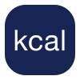

Platform digital monitoring terpadu yang dirancang khusus untuk mengelola,
menilai, dan mengevaluasi pelaksanaan Program Makan Bergizi Gratis secara
nasional.
sistem pengawasan real-time yang memastikan setiap tahapan operasional
berjalan sesuai standar prosedur (SOP).
Tanpa perhitungan yang tepat, dapur berisiko mengalami kelebihan atau
kekurangan bahan baku. Hal ini dapat membuat biaya tidak efisien. Sistem
kami menghitung gramasi secara otomatis
Laporan operasional otomatis mempermudah proses verifikasi, efisien waktu,
dan data lebih akurat.
Proses dari persiapan hingga selesai dapat dipantau secara realtime dan dipastikan sesuai tujuan.
Proses dari persiapan hingga selesai dapat dipantau secara realtime dan dipastikan sesuai tujuan.
Monitoring Proses
Apa itu Bantu MBG?
Perencanaan Belanja Bahan Baku
Laporan Digital & Monitoring Proses
Solusi Terpadu


Yayasan dan dapur masih menghadapi sejumlah tantangan dalam menjalankan
Program MBG, yang dirancang untuk menjamin asupan makanan sehat dan tepat
waktu bagi siswa.
Tantangan Program Gizi
Problematika
Problematika

Perencanaan Belanja
Pencatatan Manual
Deteksi Lambat
Distribusi
Tanpa sistem yang kuat, program besar akan sulit diukur keberhasilannya
secara akurat.
Tanpa sistem yang jelas, kebutuhan bahan baku sulit diprediksi, berisiko
menimbulkan kekurangan atau kelebihan stok.
Tanpa sistem yang jelas, Ketidaksesuaian porsi/sasaran sulit terdeteksi
secara dini.
Tanpa sistem yang jelas, kebutuhan bahan baku sulit diprediksi, berisiko
menimbulkan kekurangan atau kelebihan stok.
Tanpa sistem yang jelas, kebutuhan bahan baku sulit diprediksi, berisiko
menimbulkan kekurangan atau kelebihan stok.
Tanpa sistem yang jelas, kebutuhan bahan baku sulit diprediksi, berisiko
menimbulkan kekurangan atau kelebihan stok.
Berlangganan Sekarang
Mewujudkan program Makan Bergizi Gratis nasional yang tidak hanya berjalan,
tetapi terpantau, terukur, dan berdampak nyata hingga ke setiap penerima
manfaat.
Monitoring MBG yang
Dalam Satu System
Transparan & Terukur
Pantau. Evaluasi. Tingkatkan
Tantangan
Bantu
MBG
Fitur
Solusi
Manfaat
Hubungi Kami
Daftar Mitra


PASS
FAIL
PARTIAL
Yayasan SPPG
Dapur Mitra
Pihak Sekolah
Hasil akhir berupa "Skor HACCP" untuk setiap fasilitas dapur atau
wilayah, diukur berdasarkan sistem jaminan keamanan pangan yang bertujuan
untuk mengidentifikasi, mengevaluasi, dan mengendalikan bahaya secara
sistematis.
Kualitas gizi makanan harian
Ketepatan waktu operasional distribusi
Tingkat keterjangkauan titik wilayah
Kendali penuh yayasan dengan laporan dan rencana biaya akurat.
Sistem yang saling terhubung memberikan kendali penuh kepada tiap pemangku
kepentingan untuk memastikan program berjalan lancar dan akuntabel.
Platform Satu Pintu
Untuk Seluruh Ekosistem.
Untuk Seluruh Ekosistem.
Penilaian Berbasis Standar Keamanan Pangan
Transformasi Digital
100
Sangat Baik
Keamanan pangan minggu ini
Bantu MBG

Sistem Monitoring Program Makan Bergizi Gratis terpadu untuk memastikan
pelaksanaan nasional yang efektif dan transparan.